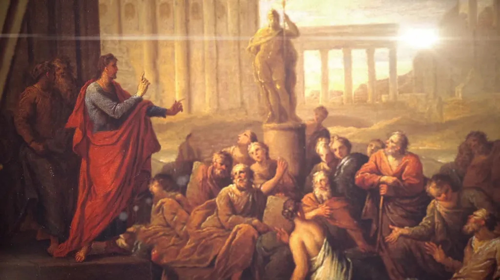

"Euology for Caesar"
Date:
1st Century
Written by:
Saul of Tarsus
Location:
Athens
Delivered by Saul of Tarsus (Paul) to the Athenian people from atop the Aeropogus
The Aeropagus Sermon (NRSV)
by Saul of Tarsus
Athenians, I see how extremely spiritual you are in every way. For as I went
through the city and looked carefully at the objects of your worship, I found
among them an altar with the inscription,
"To an unknown god."
What therefore you worship as unknown, this I proclaim to you. The God who made the world and
everything in it, he who is Lord of heaven and earth, does not live in shrines
made by human hands, nor is he served by human hands, as though he needed
anything, since he himself gives to all mortals life and breath and all things.
From one ancestor he made all peoples to inhabit the whole earth, and he
allotted the times of their existence and the boundaries of the places where
they would live, so that they would search for God and perhaps fumble about
for him and find him—though indeed he is not far from each one of us. For
"In him we live and move and have our being"; as even some of your own poets
have said, "For we, too, are his offspring."
Since we are God's offspring, we ought not to think that the deity is like gold or silver or stone, an image
formed by the art and imagination of mortals. While God has overlooked the
times of human ignorance, now he commands all people everywhere to repent,
because he has fixed a day on which he will have the world judged in
righteousness by a man whom he has appointed, and of this he has given
assurance to all by raising him from the dead.